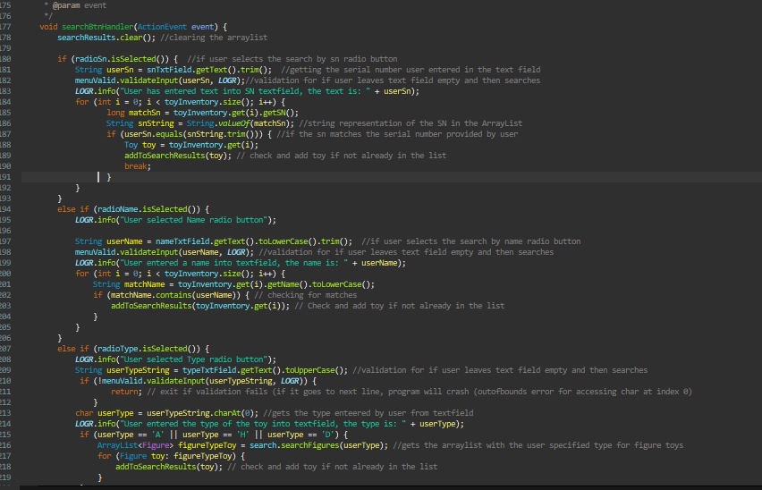
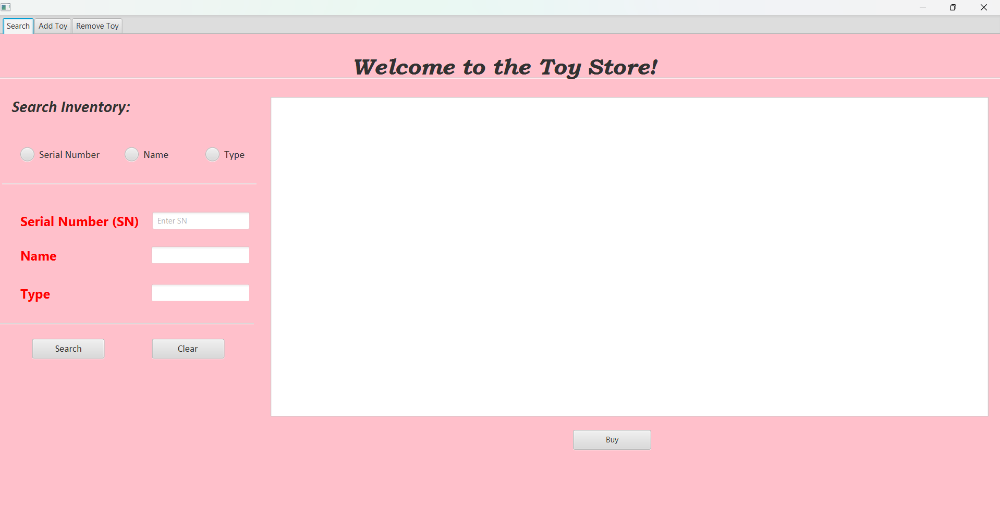

Code snippet of the Search panel

The final product
Project Description
For this project, we were tasked with converting a previous Java assignment—a toy store program with options
to buy, add, or remove toys—into a GUI-based application. This was a group project, and our team divided the
workload by assigning each member a specific GUI panel. My responsibility was the Search Panel, where users
could search for toys in the inventory.
The transition to a GUI required adherence to the Model-View-Controller (MVC) design pattern, which ensured
a clean separation between the logic, user interface, and data handling. This required
significant refactoring of the original code to make it compatible with the GUI.
Challenges
One of the most significant was connecting the inventory data to a text file. While the original code worked
well with a console-based input/output system, adapting it for a GUI required ensuring seamless data
persistence. This was achieved by carefully revisiting the file-handling logic and modifying it to interact with
the GUI elements effectively.
Another major adjustment was removing the numerous print statements that were previously used for debugging or
displaying results in the console. Instead, I had to direct all output to the appropriate GUI components, such
as labels or text areas, ensuring a more user-friendly and intuitive interface.
Learning
This project was a tremendous learning experience. It deepened my understanding of GUI development in Java.
I became more comfortable with event-driven programming, which is
fundamental in building interactive user interfaces.
Despite the initial struggles with refactoring and adhering to the MVC structure, I successfully completed
my part of the project. I realized the importanc of modular, well-structured code that can be easily adapted to
different contexts.
This project strengthened my problem-solving skills and taught me the value of teamwork and
collaboration. By dividing the work and sharing ideas, we were able to overcome individual challenges and
deliver a cohesive, functional application.